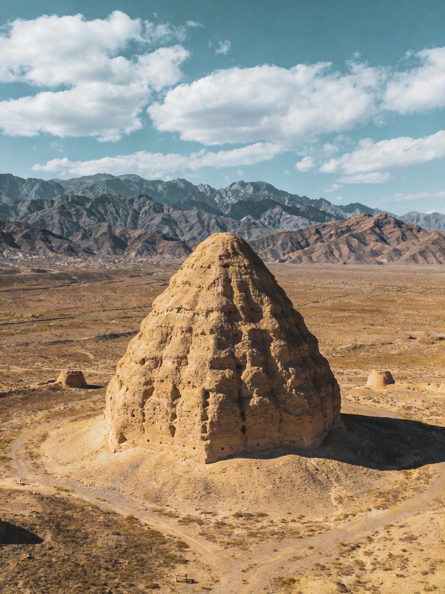
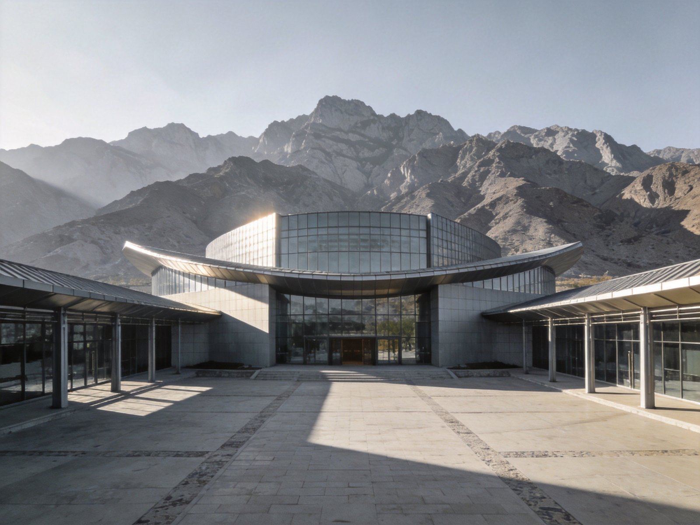
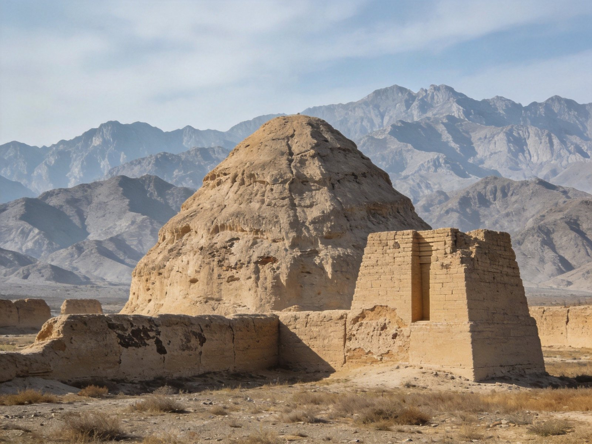
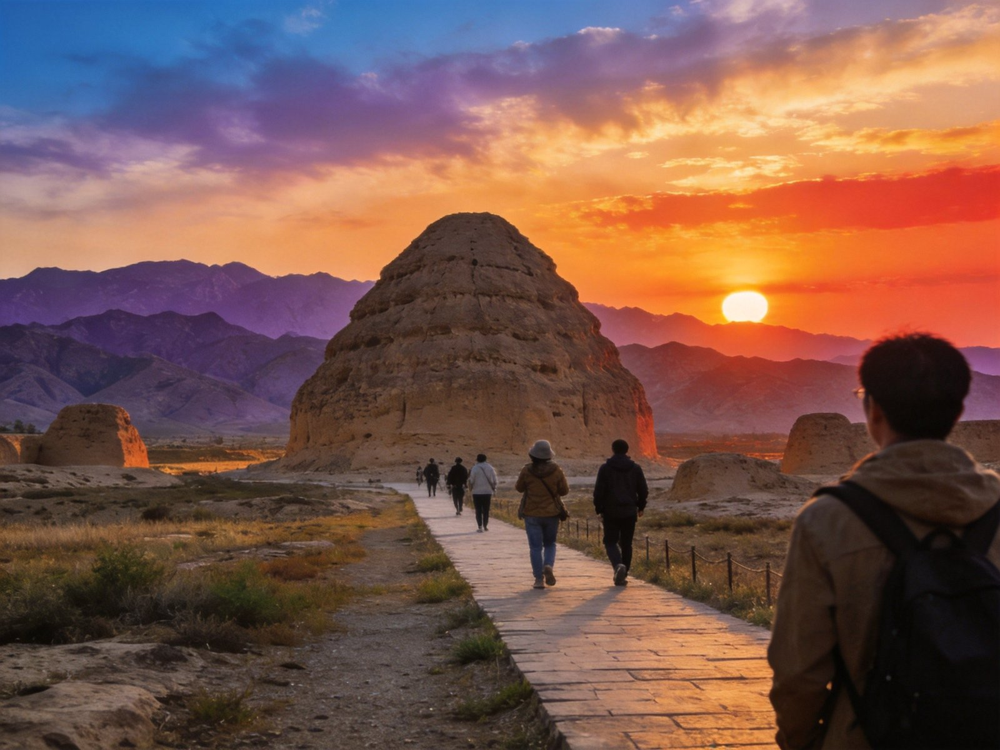
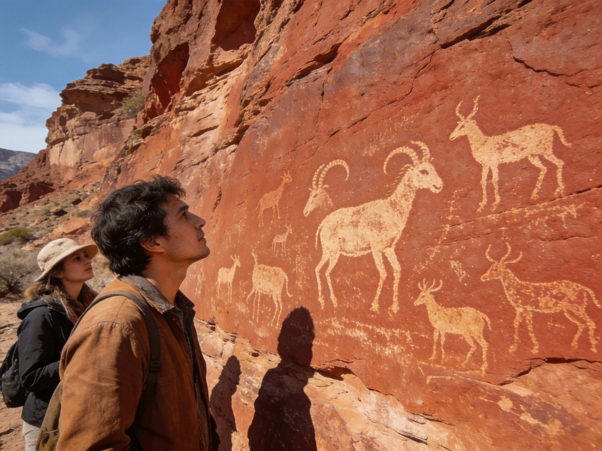

封面
总览
行前准备
Day1 文化
Day2 遗址
Day3 返程
美食清单
组合·贴士
安全提示

XIXIA TOMBS · 西夏王陵
东方 · 金字塔
西夏王陵 · 贺兰东麓
东方金字塔
历史人文
西夏文明
苍凉大漠
博物馆
2 天 · A5 手册 · 历史/人文/摄影
1
/ 9
西夏王陵
动线总览
2 天怎么玩
Route Overview
Day 1
文化
西夏博物馆
西夏博物馆 → 三号陵遗址（最大陵台）
Day 2
遗址
考古公园
遗址公园全景 → 文创 → 返程或接贺兰山
TIP
🎫 西夏王陵景区含博物馆+陵区，电瓶车串联各陵更省力。
TIP
🏛 建议先去博物馆涨知识，再看陵台更有代入感。
2
/ 9
西夏王陵
行前准备
出发前，记住这 3 点
Before You Go
🏨 住哪最顺
银川市区酒店
：往返西夏王陵方便，配套齐全，
首推
贺兰山下民宿可看山景，氛围感强
银川是宁夏交通枢纽，返程便利
🚄 怎么走
到
银川
后乘公交/打车/自驾到西夏王陵（约 30 公里）
景区内
电瓶车+步行
游览最省力
可顺路串联贺兰山岩画/西部影城
🎒 必带
防晒、帽子、水、舒适徒步鞋
园区开阔风大，备件外套防寒

西夏博物馆
3
/ 9
西夏王陵
Day 1 · 文化
Day 1 · 文化
西夏博物馆 · 王朝记忆
西夏博物馆
→
三号陵
→
陵区落日
🏛 西夏博物馆
系统展现西夏王朝近两百年兴衰
文字、货币、佛教造像，珍贵文物直观震撼
🏯 三号陵遗址
陵区规模最大的陵台，黄土夯筑高耸
可登高远眺，感受王陵的苍凉肃穆
🌇 陵区落日
夕阳把陵台镀成金色，贺兰山作背景
剪影打卡，出片极佳
TIP
先博物馆后陵台
，先学历史再凭吊，代入感强很多；落日时分最出片。

西夏博物馆 · 王朝记忆
4
/ 9
西夏王陵
Day 2 · 遗址
Day 2 · 遗址
考古遗址公园 · 返程
遗址公园
→
文创伴手礼
→
返程
🗺 考古遗址公园
在考古现场感受西夏王陵宏大布局
电瓶车串联多座陵，黄土地貌辽阔苍茫
🏺 文创/西夏文化
西夏文印章、琉璃鸱吻等文创灵动有趣
带走一份王朝记忆
🔗 顺路连玩
时间富余可接
贺兰山岩画
或镇北堡西部影城
一条线串起宁夏人文
TIP
遗址公园风大土干，
注意防晒补水
；留意电瓶车末班时间，别耽误返程。

考古遗址公园 · 返程
5
/ 9
西夏王陵
Day 3 · 返程
Day 3 · 返程
弹性 · 收尾
顺路亮点
→
市区
→
返程
🎯 弹性安排
若为 3 日行程，Day3 可接贺兰山岩画/苏峪口
或镇北堡西部影城，充实又顺路
🛍 银川市区
尝手抓羊肉、八宝茶
怀远夜市烟火气十足
TIP
西夏王陵本身
1.5-2 天足够
，第三日接贺兰山/影城更划算。

岩画 · 贺兰山
西夏 · 博物馆
6
/ 9
西夏王陵
美食清单
塞上江南的味道
Eats
🍖
手抓羊肉
宁夏滩羊肉鲜嫩不膻，手抓最地道——必试
🥟
羊肉臊子面/蒿子面
西北面食，汤浓味厚
🥬
沙葱
沙漠时蔬，爽脆清新
🌶
凉皮
酸辣开胃
🍐
硒砂瓜(夏季)
宁夏特产西瓜，沙甜多汁
🫖
八宝茶
盖碗茶，招待客人的西北礼遇
TIP
银川手抓羊肉
一条街水准都不低；回族聚居区请尊重清真习俗。
7
/ 9
西夏王陵
组合 · 贴士
怎么串着玩
Combine & Tips
🏛
历史文化双拼
西夏王陵+贺兰山岩画，两个文明遗产一网打尽
📷
摄影
黄土陵台+贺兰山背景，黄昏剪影大片
👨👩👧
亲子研学
博物馆+遗址，历史课现场教学
⛅
天气
晴天陵区更苍凉出片；风大尘土多
🔗
连玩
近
银川
，可串联西部影城、鸣沙洲湿地
TIP
西夏王陵“一陵一馆”，
历史+苍茫风光
两不误，读懂一个消失的王朝。
8
/ 9
西夏王陵
安全提示
看清这些，玩得更安心
Stay Safe
⚠️
园区安全
园区开阔陵台，勿攀爬遗址本体
☀️
防晒防风
戈壁风大日晒强，帽子墨镜必备
💧
补水
遗址区干燥，多带水、及时补水
🚶
徒步
穿舒适鞋，园区路面土多石粒
📞
紧急
紧急拨 110 / 120 / 119；游客中心可求助
塞上江南「WorldStip」祝你玩得尽兴 🏯
9
/ 9
西夏王陵 · 贺兰东麓 2 日手册 · 由 WorldStip 定制
Insta360
记录美好
记录美好生活
相机指南 · CAMERA GUIDE